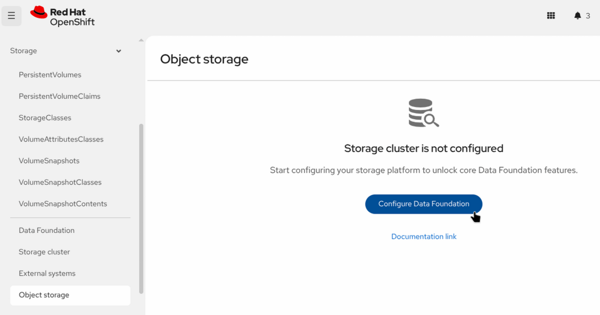
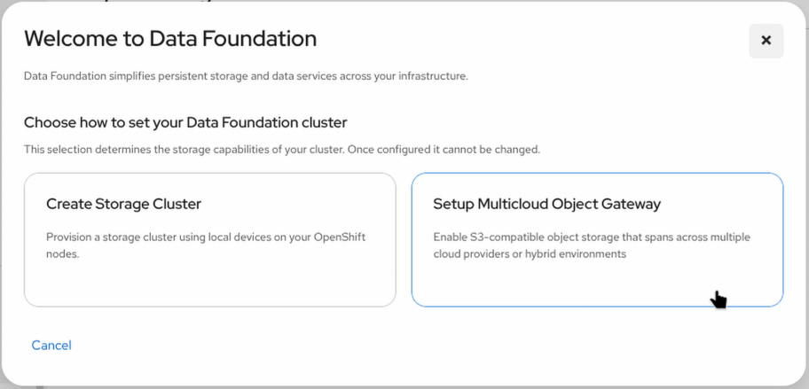
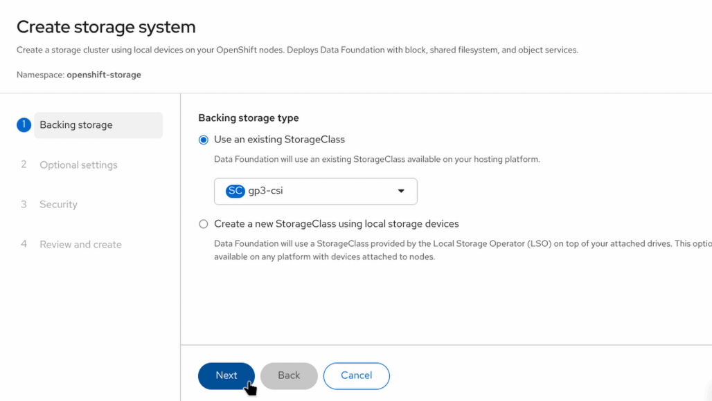
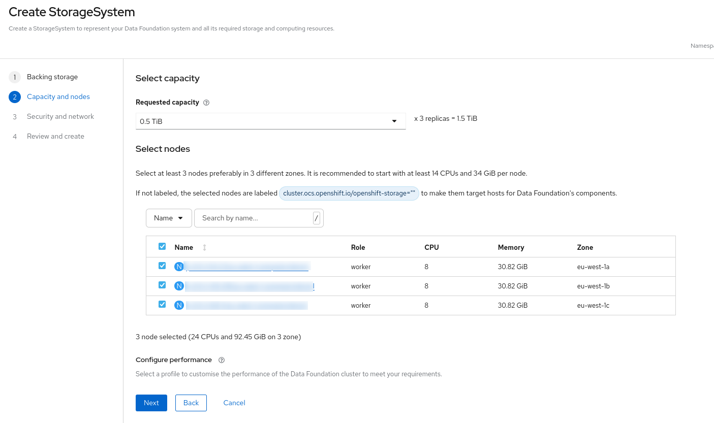

Prerequisites
|
This tutorial was developed and tested with:
|
The following tools are required to run the exercises in this tutorial. Please ensure that they are installed and properly configured before proceeding with any of the tutorial chapters.
| Tool | Reference |
|---|---|
|
|
|
|
|
|
|
|
|
|
|
|
|
|
|
Note: Some of these tools are also available through the web terminal provided by the operator.
Object Storage Options
Red Hat Quay requires an S3-compatible object storage backend to store container images and artifacts. Depending on your environment, you can choose one of the following two storage deployment options:
-
Option A: OpenShift Data Foundation (MCG): recommended if you need a cluster-local, self-contained S3 gateway.
-
Option B: External AWS S3 Bucket: recommended if your cluster is hosted on AWS and you prefer using cloud-native S3 storage directly.
Option A: OpenShift Data Foundation (Multicloud Object Gateway)
OpenShift Data Foundation (ODF) offers multiple deployment models depending on storage requirements. In this guide, we focus on the Multicloud Object Gateway (MCG) mode, which provides a lightweight, S3-compatible object storage gateway layer (powered by NooBaa).
Unlike a full Ceph deployment, MCG mode does not deploy a complete storage data plane, resulting in significantly lower resource consumption.
Installing the ODF Operator
-
Log in to the Red Hat OpenShift Container Platform web console.
-
From the Core Platform perspective, navigate to Ecosystem > Software Catalog.
-
In the search field, type
OpenShift Data Foundation.
-
Select the Red Hat OpenShift Data Foundation tile and click Install.

-
On the Install Operator page:
-
Select the update channel corresponding to your OCP version (
stable-4.22). -
Select A specific namespace on the cluster (
openshift-storage). -
Set Update Approval to Automatic.
-
Enable the Console plugin.
-
-
Click Install and wait for the installation to complete.
Creating the StorageSystem in MCG Mode
-
In the OpenShift console, navigate to Storage > Object Storage.
-
Click Configure Data Foundation.

-
Select Setup Multicloud Object Gateway.

-
On the Backing storage, select Use an existing StorageClass (
gp3-csior equivalent block storage class).
-
Click Next through the remaining prompts and click Create StorageSystem.

Wait until all ODF/MCG pods in the openshift-storage namespace are running before proceeding to the Quay installation.
|
Option B: External AWS S3 Storage (Unmanaged)
If you already have access to Amazon Web Services (AWS) or wish to bypass installing ODF on your cluster, you can use an existing AWS S3 bucket for Quay image storage.
Requirements for External S3 Storage
Before configuring Quay with AWS S3, ensure you have:
-
An active AWS S3 Bucket created in your target AWS region.
-
An AWS IAM User/Role with read/write permissions to the bucket (
s3:GetObject,s3:PutObject,s3:DeleteObject,s3:ListBucket). -
The AWS Access Key ID and AWS Secret Access Key for authentication.
When deploying Quay with external S3 storage, you will supply these credentials directly in the Quay QuayRegistry custom resource or via a Kubernetes Secret during deployment.
|
Installing the Quay Operator
Subscribe to and deploy the Red Hat Quay Operator.
-
Open a browser window and log in to the Red Hat OpenShift Container Platform web console.
-
From the Core Platform perspective, navigate to Ecosystem > Software Catalog.
-
In the search field, type
Red Hat Quay.
-
Select the Red Hat Quay tile and click Install.

-
On the Install Operator page:
-
Select
stable-3.17from the list of available Update Channel options. -
Choose All namespaces on the cluster (default) as the installation mode.
-
Select Automatic for update approval.

-
-
Click Install and wait for the operator status to show as Succeeded.
Deploying Quay
-
Create a new project named
quay-workshop. -
From the Core Platform perspective, navigate to Ecosystem > Installed Operators.
-
Select the quay-workshop project from the Project drop-down menu at the top.
-
Click on the Red Hat Quay Operator.
-
Select the QuayRegistry tab and click Create instance.

-
Configure the Quay instance:
-
Default deployment (MCG/ODF Storage): Leave the default settings (we will name the instance
registryor modify it if desired) and click Create. The operator will automatically provision object storage using MCG. -
AWS S3 / Unmanaged Storage: If you are using external S3 storage, switch to the YAML view, locate the
componentssection, setobjectstoragetomanaged: false, and reference your configuration secret inspec.configBundleSecretbefore clicking Create.
-
-
Wait a few minutes until all Quay deployments are initialized and the registry status shows as Ready.
Adding the Quay Certificate as a Trusted CA in OCP (Optional)
This step is recommended if your Quay registry uses a self-signed or internal CA certificate, allowing the OpenShift cluster nodes to trust the Quay registry.
-
Export your Quay registry hostname to a local variable and extract the certificate:
QUAY_HOSTNAME=$(oc get route registry-quay -n quay-workshop -o jsonpath='{.spec.host}') echo -n | openssl s_client -showcerts -connect $QUAY_HOSTNAME:443 | sed -ne '/-BEGIN CERTIFICATE-/,/-END CERTIFICATE-/p' > quay.crt -
Create a ConfigMap containing the certificate in the
openshift-confignamespace:oc create -n openshift-config configmap quay-ca --from-file=$QUAY_HOSTNAME=quay.crt -
Verify that the ConfigMap was created properly:
oc get -n openshift-config configmap quay-ca -o yaml -
Patch the cluster image configuration to add the CA as a trusted certificate source:
oc patch image.config.openshift.io/cluster --type=merge -p '{"spec":{"additionalTrustedCA":{"name":"quay-ca"}}}' -
Verify the cluster image configuration update:
oc get image.config.openshift.io/cluster -o yaml